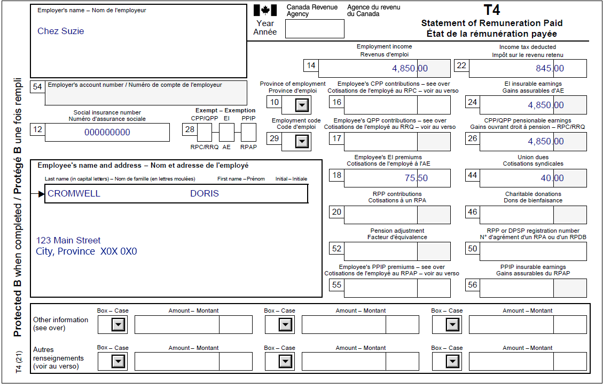

Reporting US social security benefits
Pre-test question
Sorry, that's incorrect
Individuals can claim a deduction equal to 15% of their U.S. Social Security benefits and can increase the deduction to 50% if they meet certain conditions.
That's correct
Individuals can claim a deduction equal to 15% of their U.S. Social Security benefits and can increase the deduction to 50% if they meet certain conditions.
Instructions
- Open the tax software
- Review the Background information and Required slips (tax slips, receipts, etc.)
- Provide all required information for the appropriate sections of the tax software
- Once completed, compare your results with the solution provided
- Afterwards, refer to the Takeaway points
Background information
Situation
Doris is employed at a bakery (Chez Suzie) and started receiving U.S. Social Security benefits last year. Doris was told by a friend that there is a deduction for individuals receiving U.S. Social Security benefits and wants to claim it.
Identification information
| Name | Doris Cromwell |
|---|---|
| Social insurance number (SIN) | 000 000 000 |
| Address | 123 Main Street City, Province X0X 0X0 |
| Date of birth | June 13, 1950 |
| Marital status | Single |
Required slips
T4 – Statement of Remuneration Paid (Chez Suzie) (for Doris)
Text version for the T4 slip
T4 – Statement of Remuneration Paid
Protected B
Employer’s name: Chez Suzie
Employee’s name and address:
Last name: Cromwell
First name: Doris
123 Main Street City Province X0X 0X0
Box 12: Social insurance number: 000 000 000
Box 14: Employment income – line 10100: 4,850.00
Box 22: Income tax deducted – line 43700: 845.00
Box 24: EI insurable earnings: 4,850.00
Box 26: CPP/QPP pensionable earnings: 4,850.00
Box 18: Employee’s EI premiums – line 31200: 75.50
Box 44: Union dues – line 21200: 40.00
SSA-1042S – U.S. Social Security Benefit Statement (foreign pension income)

Text version for Form SSA-1042S
Form SSA-1042S – Social Security Benefit Statement – SAMPLE
This form is for use in filing a United States federal income tax return. Do not return it to social security. Read the information on the reverse.
Box 1: Name: Doris Cromwell
Box 2: Beneficiary’s Social Security Number: XXX-XX-XXXX
Box 3: Benefits Paid in 20XX: 1,250.00
Box 4: Benefits Repaid to SSA in 20XX: NONE
Box 5: Net Benefits for 20XX (Box 3 minus Box 4): 1,250.00
Description of amount in box 3: Paid by check or direct deposit: 1,000.00
Medicare Part B premiums deducted from your benefits: 250.00
Total Additions: 1,250.00
Benefits for 20XX: 1,250.00
Description of amount in box 4: NONE
Box 7: Amount of Tax Withheld: NONE
Box 8: Amount of Tax Refunded: NONE
Box 9: Net Tax Withheld During 20XX (Box 7 minus Box 8): NONE
Box 10: Address 123 Main Street City Province CA X0X 0X0
Box 11: Claim Number (Use this number if you need to contact SSA): XXX-XX-XXXX
Review your results
Review your results
Solutions will be available in February 2023 as printable PDF.
Takeaway points
Steps to follow
- Review their background information and required slips
- In Interview setup, tick the box next to Employment income and employment insurance benefits (T4,T4E/RL-6) in the Employment and other benefits section
- Tick the box next to Foreign income or foreign property (T1135) in the Investment income and expenses section
- Click T4 and employment income in the left-side menu, then click the + sign next to T4 and enter the required information.
- Click Foreign income and property in the left side menu, then click the + sign next to Foreign pension income (includes U.S. social security benefits) in the Foreign non-business income section
- Select United States (tax treaty with Canada) from the Country from where you received the foreign income drop-down menu, then enter U.S. Social Security into the Description of the source of the foreign income field
- Enter the applicable exchange rate for the year into the Exchange rate to apply field (Enter 1 if the amount has already been converted to Canadian dollars)
- Select United states social security benefits (15%) from the Type of foreign pension income drop-down menu
- Enter the amount that Doris received into the Amount of foreign income received field
Since Doris’s foreign pension started after January 1996, she is not eligible to select United States social security benefits (50%) from the Type of foreign pension income drop down menu.
The software automatically applies the applicable exchange rate to the amount entered in the Amount of foreign income received field and reports the amount on line 11500.
The deduction is found on line 25600.
For more information refer to UFile instructions.